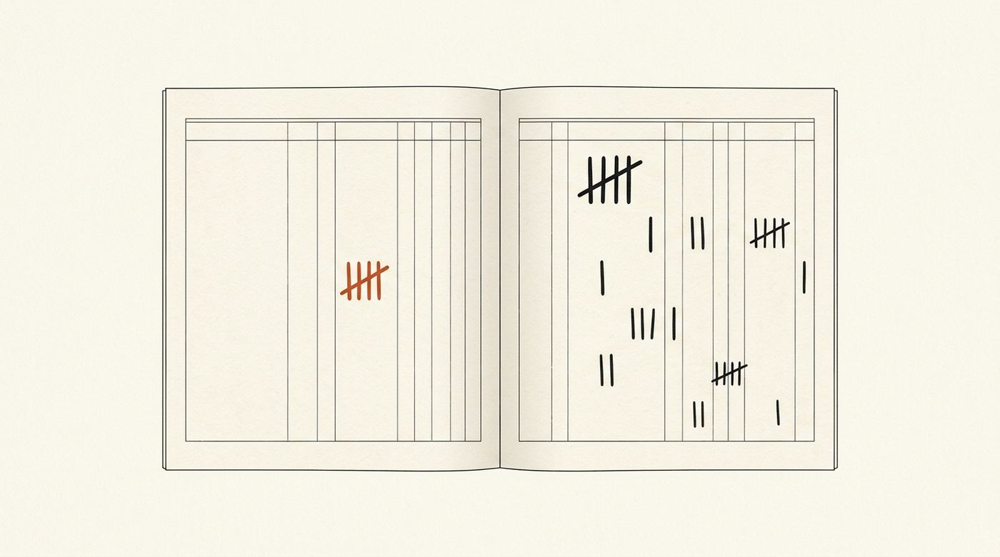

01
Research Before Executing
CheckDid I search for existing solutions before writing anything new?
Red flag
I'll just quickly...
Your agent edits before it reads, says "done" without running the test, and forgets yesterday's correction. continuous-improvement puts a gate before the edit, demands proof before "done", and keeps a ledger across sessions so a lesson learned once is not taught twice.
/plugin marketplace add naimkatiman/continuous-improvement /plugin install continuous-improvement@continuous-improvement
# the agent tries to create a file with no research on the table
$ printf '{"tool_name":"Write","tool_input":{"file_path":"src/lib/retry-helper.mts"}}' \
| node hooks/gateguard.mjs
{
"hookSpecificOutput": {
"hookEventName": "PreToolUse",
"permissionDecision": "deny",
"permissionDecisionReason": "Before creating src/lib/retry-helper.mts, present these facts:
1. List ALL files that import/require this file (use Grep)
2. List the public functions/classes affected by this change
3. If this file reads/writes data files, show field names, structure, and date format
4. Quote the user's current instruction verbatim
Then clear the gate and retry the same call. …"
}
}
# the agent presents the facts, runs the printed clear command, retries $ node bin/gateguard-clear.mjs --state …/gateguard-session.json src/lib/retry-helper.mts Cleared 1: src/lib/retry-helper.mts $ printf '…same payload…' | node hooks/gateguard.mjs (empty stdout, exit 0: the allow)
Real output, paths shortened. One denied call, a printed reason, a clear, a retry. The hook cannot tell whether the investigation happened; the ledger settles that by outcome. What it can and cannot do
Every red flag an agent says out loud is a wish standing in for a check. The fix is older than software.
The wise one takes account of himself and works for what comes after. The weak one follows his own impulse and merely wishes.
الْكَيِّسُ مَنْ دَانَ نَفْسَهُ وَعَمِلَ لِمَا بَعْدَ الْمَوْتِ، وَالْعَاجِزُ مَنْ أَتْبَعَ نَفْسَهُ هَوَاهَا وَتَمَنَّى عَلَى اللَّهِ
Orang yang bijak ialah orang yang sentiasa memuhasabah dirinya dan beramal sebagai persiapan untuk kehidupan selepas mati, manakala orang yang lemah ialah orang yang mengikut hawa nafsu dan hanya berangan-angan kepada Allah.
Jami` at-Tirmidhi 2459, narrated by Shaddad ibn Aws. Tirmidhi graded it hasan; later scholars disputed the chain. Full sourcing

Taking account of yourself is muhasabah, the word Tirmidhi uses to explain the first clause. Watching yourself as you act is what the engine here is named for: mulahazah, observation. The 7 Laws are that one sentence turned into checks an agent can run on itself: set the conditions before the act, watch during it, settle the account after it, carry the result into the next session.
The hooks make hoping expensive. The instinct ledger keeps the account: a correction cuts confidence, disuse lets it fade, and a drifted session cannot quietly say done.
Each law is one check to pass and one red flag to catch. Set the terms before the act, watch during it, settle the account after it. A failure never carries forward into the next task: it loops back to research.
I'll just quickly...
Let me also add...
While I'm here...
And also...
This should work...
I'll remember...
Next time I'll...
Execute moves one thing at a time. If you are skipping a step, that is the step you need most.
Hooks sit between the agent and your files. Before the act they force grounding; during it they watch for drift; after it they demand proof. What they cannot do is make the agent honest. That part is the agent's own audit, and the ledger scores it by outcome.
Denies the first Edit, Write or MultiEdit per file and prints a four-item fact list. The agent clears it by presenting the facts and running the printed command, then retries. Fifty files per session, then it stops clearing. Destructive Bash (rm -rf, git push --force, DROP TABLE, and a fixed list of others) is denied on every call with no clearance route: the agent has to hand it to you.
Destructive command requested: git push --force origin main
1. List ALL files/data this command will modify or delete
2. Write a one-line rollback procedure
3. Quote the user's current instruction verbatim
Matched rule: substring:git push --force
Destructive Bash gates EVERY call — clearance is not cached.
Watches the files that wire every other gate: .claude/settings.json, .mcp.json, hooks.json, the hooks and plugin directories, and the claude plugin, mcp and config commands that edit them. Reads never trigger it. Without this, an agent can switch off its own guardrails in a single edit and nothing stands in the way.
config-guard: Edit would modify
~/.claude/settings.json (matches ".claude/settings.json"),
one of the files that wires the guardrails.
warn prints this and allows. CI_CONFIG_GUARD=block denies it.
Appends one line per tool call to ~/.claude/instincts/<project-hash>/observations.jsonl: timestamp, tool, a truncated input and output summary. A local file, never sent anywhere. It judges nothing by itself; it is the raw material the ledger below is settled from.
{"ts":"2026-09-06T04:41:02Z","event":"tool_complete",
"tool":"Bash","input_summary":"npm run verify:all",
"output_summary":"OK landing-version: all 4 markers…",
"project_name":"continuous-improvement"}
Scores the turn's tool activity against the ## Goal in task_plan.md when the agent tries to stop. Warns on stderr by default. Set CLAUDE_GOAL_DRIFT_GATE=block and a drifted wrap-up is re-prompted instead of accepted. Needs a stated goal; with none it stays quiet.
$ export CLAUDE_GOAL_DRIFT_GATE=block goal-check → ON GOAL allow status: DRIFT → re-prompt, refuse "done" status: NO DATA → allow, ask for a goal
Runs the project typecheck on changed TypeScript files at turn end. CLAUDE_TYPECHECK_GATE=block feeds the compiler output back to the model so a headless loop fixes its own type errors before it ends the turn. Fails open on any error or timeout.
$ export CLAUDE_TYPECHECK_GATE=block tsc --noEmit on 3 changed files src/lib/x.mts(12,7): error TS2322 → re-prompt with the output
Re-prompts any substantive reply that lacks the headings What has been done, What is next, and Recommendation, so a wrap-up states its evidence and its next move in a fixed shape. It is a house style shipped as a gate. CLAUDE_THREE_SECTION_CLOSE_DISABLED=1 turns it off.
$ export CLAUDE_THREE_SECTION_CLOSE_DISABLED=1 reply > 600 chars, headings missing → re-prompt headings present → allow
A six-phase ladder (build, types, lint, tests, security, diff) the agent walks before it may say done, with a PASS/FAIL report per rung. It is a skill the model applies, not a hook; the Stop gates above are what make skipping it costly.
build PASS
types PASS
tests PASS 1249/1249
diff PASS 3 files, 41 lines, one concern
Mulahazah means observation. Every tool call is appended to a local log. When you run /seven-laws after a real session, repeated patterns and corrections become instincts with a confidence score: silent below 0.5, suggested from 0.5, applied at 0.7. An accepted suggestion adds, a correction cuts, and the same mistake stops returning. Capture is silent; the account is settled only when you close the loop.
id: prefer-grep-before-edit
trigger: "when modifying code"
confidence: 0.65 ← suggest
observation_count: 6
---
Always confirm the location with Grep before Edit.
With CLAUDE_RECALL_BRIEFING=1, the first substantive prompt of a session is searched against this project's past observations and the most relevant prior fix is injected once, so the agent reuses it instead of re-deriving it. An amplifier, never a gate. /recall does the same on demand.
$ export CLAUDE_RECALL_BRIEFING=1 prompt → BM25 over observations.jsonl inject: 2026-08-14 fix for the same error (once per session)
cat > file, sed -i) are not gated. The gate covers the Edit, Write and MultiEdit tools; the destructive check reads command structure for the forms it knows, then falls back to a substring list, so an unfamiliar spelling can still get through.CI_GATEGUARD_EXCLUDE, can exclude paths from the gate. The hook names the matched fragment on stderr when that happens, and reports a catch-all such as / or . as the file gate being off.Capture is silent. Instincts form when you close the loop. If you install and never run /seven-laws, you get a seatbelt and conclude it did not learn.
Install. Give the agent a real task. Do not prefix every prompt; the gate fires on its own.
Reckless edits get denied. Fake "done" has nowhere to hide once the verification ladder runs.
First hour. No memory required.
After a non-trivial session: /seven-laws. When a bug feels familiar: /recall <the error>. One defect, one PR: /ship.
Observations become instincts. Yesterday's correction survives into today.
After the first real task, then at session end.
Expert install (npx, below). CLAUDE_RECALL_BRIEFING=1. After about twenty observations: /harvest and /distill.
MCP tools for recall and planning, starter instincts, a briefing of the last relevant fix on the next related prompt.
When you want compounding, not just a seatbelt.
As models get better, this stays. Planning etiquette and "remember to verify" reminders merge into the model. The runtime gate, this repo's past fixes, and proof that a change worked do not. Skills are disposable; the gate and the ledger are the product.
Built and used daily by one maintainer on his own production repos. Every hook here exists because a real session went wrong first; the repository's own CLAUDE.md keeps a dated table of those mistakes, what each one cost, and which check now enforces the lesson.
The product is the loop, not the word count. The reflection block has fixed fields because an unstructured "lessons learned" paragraph is how "I'll remember" disguises itself. Nothing learned is permanent: instincts weaken on correction and fade without use, because self-accounting that happens once is not self-accounting.
Read the worked examples (a bug fix, a feature, a refactor), the full skill catalog, or what changed in 3.23.0.
/plugin install, npx, and the GitHub Action transcript linter.Pick one path per machine. Running the plugin install and the npx install against the same ~/.claude duplicates state.
/plugin marketplace add naimkatiman/continuous-improvement /plugin install continuous-improvement@continuous-improvement
/verify-install/plugin install superpowers@continuous-improvement$ npx continuous-improvement install --mode expert $ npx continuous-improvement install --pack react
$ npx continuous-improvement install --target gemini,codex
GEMINI.md, AGENTS.md, .cursor/rules, …)hooks/gateguard.mjs)Nothing. Observations and instincts live under ~/.claude/instincts/ and are never uploaded. The npx installer makes one throttled read of the public npm registry to print a newer-version notice; CLAUDE_CI_UPDATE_CHECK=off silences it. No telemetry.
Two commands inside Claude Code. The gate fires in your first hour; the ledger compounds when you close the loop.
/plugin marketplace add naimkatiman/continuous-improvement /plugin install continuous-improvement@continuous-improvement